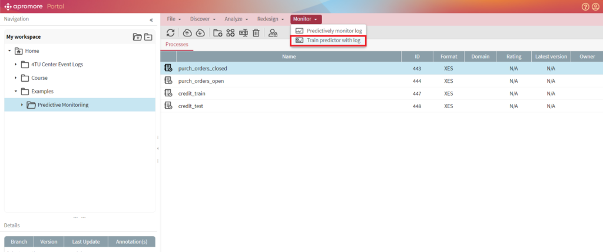
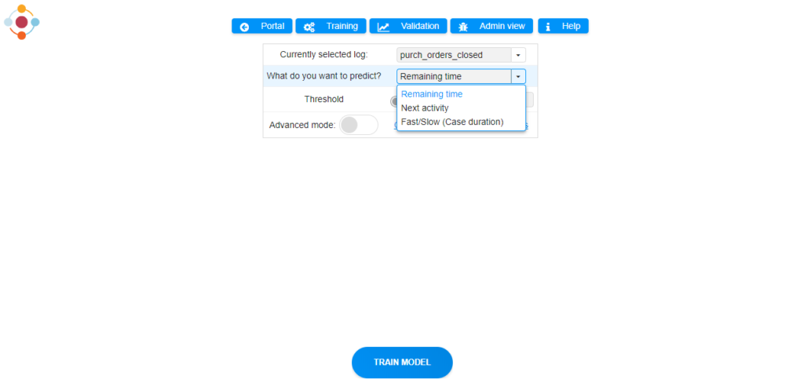
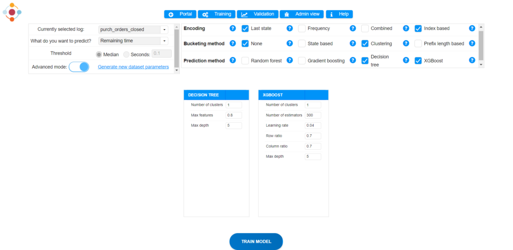
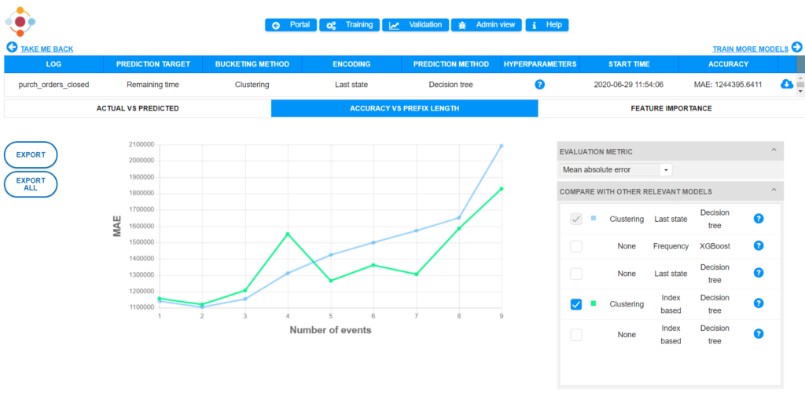

Train predictive models
The Training plugin allows users to generate predictive models for different types of predictions. Specifically, it is able to predict generic process properties, such as remaining time until case completion, the next most likely activity to be executed and whether a case will take longer than a user-defined time threshold. Additionally, the tool can build models to predict log-specific case properties, for example, the total application cost in an insurance claims handling process.
Before importing your log into Apromore, it needs to be pre-processed to add all the required attributes. The tutorial here describes a minimalist example of pre-processing operations for an event log. For demonstration purposes, Apromore repository provides several pre-processed logs under Examples/Predictive Monitoring folder. These logs can also be downloaded from here.
•To use the plugin, select a training log from the repository and click on Monitor -> Train predictor with log.

As a minimum input, a user only needs to select a prediction target, i.e. an indicator to be predicted.

Experienced users may switch to the advanced mode to fine-tune training configuration and even train multiple models at once.

Once the necessary models have been built, the tool assesses their accuracy with respect to multiple evaluation metrics using a held-out validation set.

•Trained models are saved in the Apromore database and can be pushed to the Runtime component to make predictions for ongoing cases and visualize them in an operational dashboard. A screencast of this plugin can be found here .
For non-Apromore users, a stand-alone version of the plugin can be accessed at training.nirdizati.org .